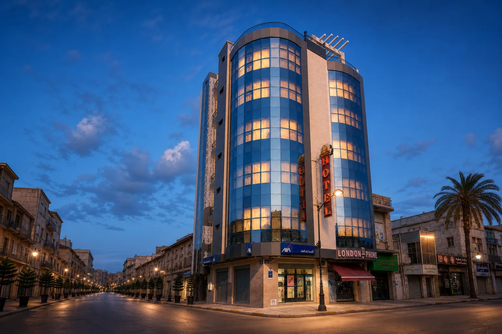
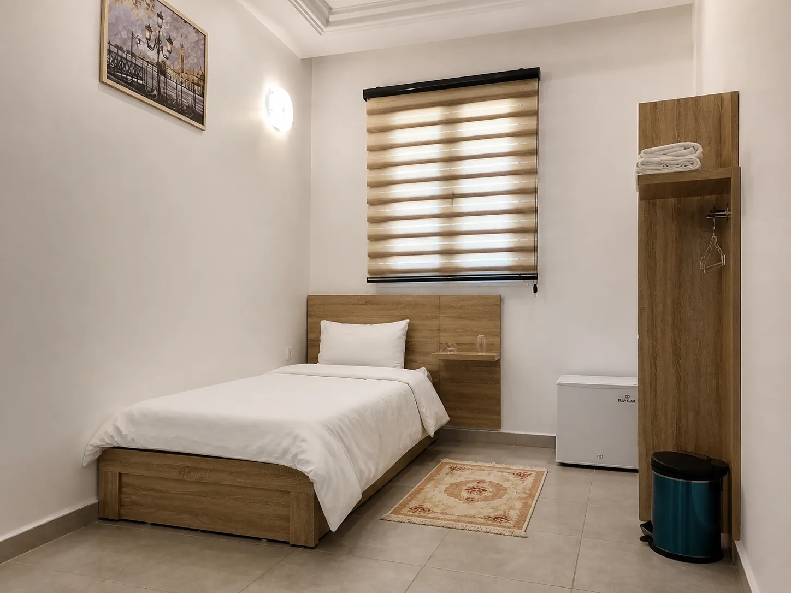
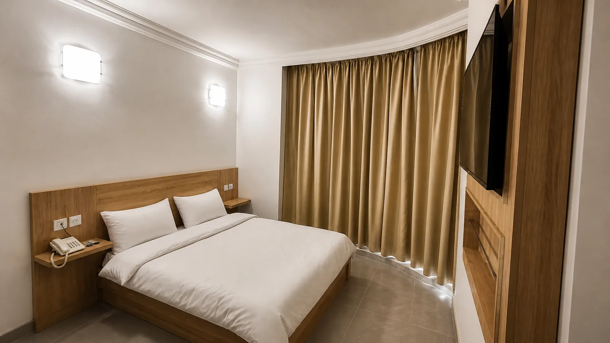
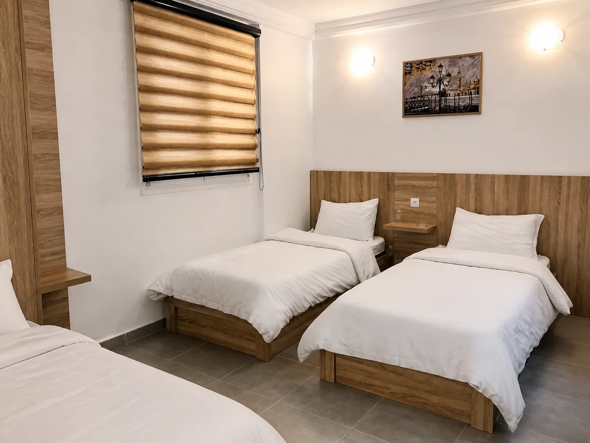
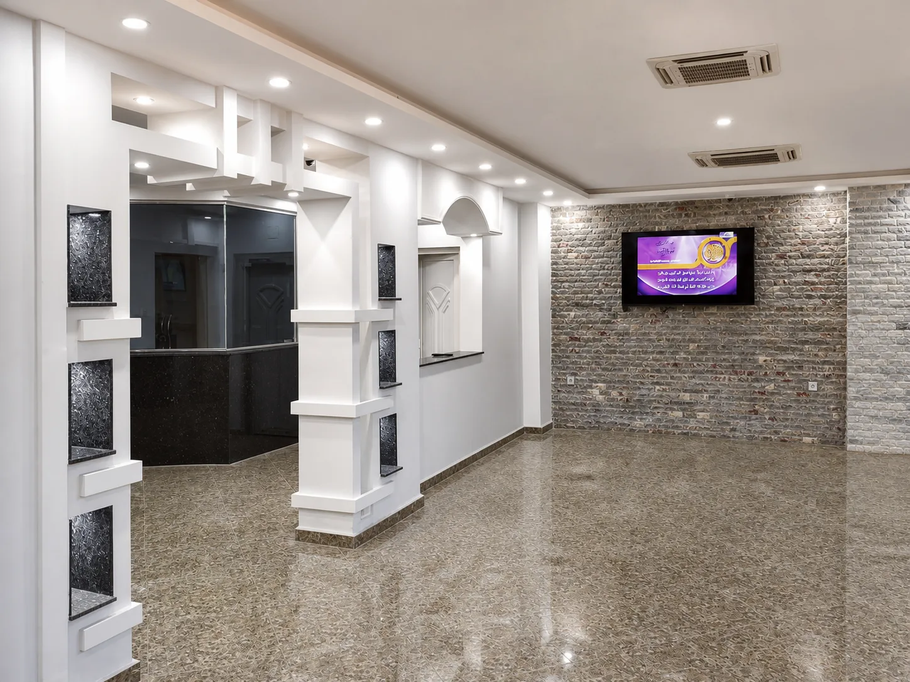

Une maison urbaine,
chaleureuse par nature.
Derrière sa façade de verre, vingt chambres pensées pour les voyageurs qui aiment la simplicité, le calme et une attention sincère.

Derrière sa façade de verre, vingt chambres pensées pour les voyageurs qui aiment la simplicité, le calme et une attention sincère.

Une lumière douce. Un lit queen. Tout ce qu’il faut.

Vue courbe, bureau généreux et nuit paisible.

Un salon à soi, pour rester un peu plus longtemps.

Le petit-déjeuner se savoure sans hâte, entre lumière du jour, café chaud et saveurs algériennes.